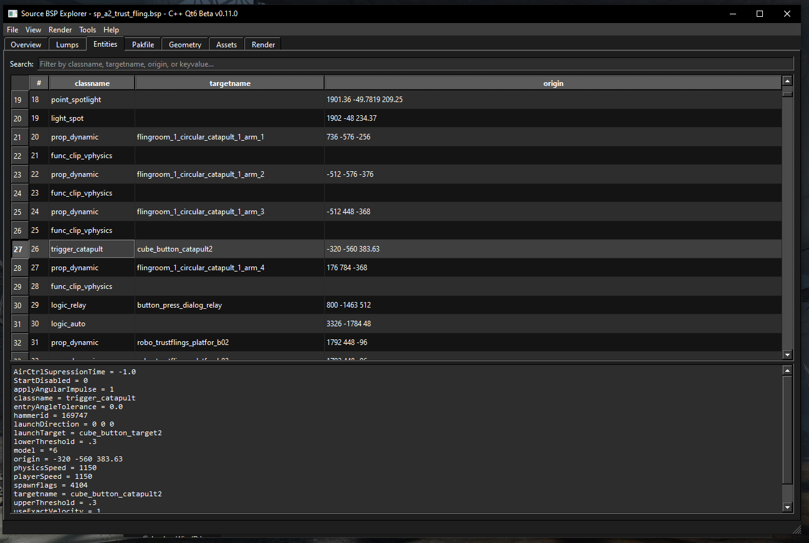
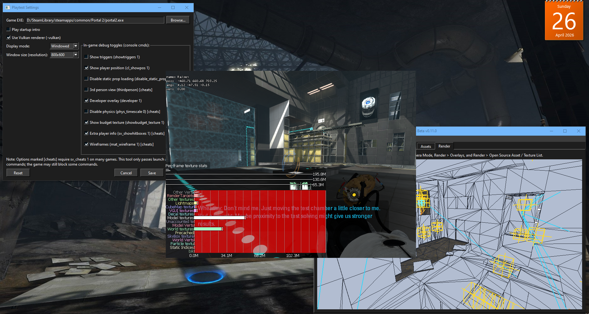

Source BSP Explorer is a standalone tool for inspecting Source Engine .BSP map files — just like the pros did back in 2004-2007!
The original prototype was made in Python with worker EXEs for heavier features. Development is now being restarted in C++ so the project can become faster, cleaner, easier to expand, and better suited for large Source maps.
Current C++ Prototype
WORKING C++ EARLY BUILD- Loads Source
.bspfiles - Checks
VBSPmagic/header - Reads BSP version and map revision
- Shows all 64 lump entries
- Parses the entities lump into readable keyvalues
- Lists embedded pakfile entries when available
- Uses a native Windows GUI instead of requiring CMD commands
This build is mainly a foundation for the new native version. The bigger visual features will come back in later C++ phases.
Built for mappers, modders, and Source engine fans. No Hammer required for quick inspection!
C++ Rebuild Roadmap
| Stage | Status |
|---|---|
| Phase 1 - Basic BSP Inspector | Available now: open BSPs, read lumps, parse entities, list pakfile entries. |
| Phase 1.1 - Better GUI | In progress/planned: improved tabs, real list/table controls, search/filter tools, cleaner file info panel. |
| Phase 2 - 3D Renderer | Planned: C++ OpenGL renderer DLL, solid/wire views, camera controls, basic world mesh. |
| Phase 3 - Materials/Textures | Planned: VPK, VMT, VTF parsing through a native asset DLL. |
| Phase 4+ - Overlays, Export, PlayTest | Planned: bring back the bigger legacy Python prototype features in native C++ form. |
The full feature list below describes the project goal and legacy prototype features. The current C++ prototype does not include all of them yet.
| Category | Details |
|---|---|
| Metadata Inspection | Full BSP header, version, lumps, checksums, revision info |
| Entity Listing + Metadata | Complete entity browser with all keyvalues, connections, and editing |
| Material & Texture Listing | Every VMT + VTF used in the map + full file paths |
| Profile Listing | Organized list of all texture/material paths (perfect for mod packing) |
| 3D Map Renderer |
PyOpenGL engine • Real-time 3D view Camera Modes: ORBIT • FLY • ORTHO_TOP • ORTHO_FRONT • ORTHO_SIDE Render Modes: SOLID • WIRE • SOLID_WIRE Toggles: Textures • Show Triggers • Show Clips • Entity Icons • Target Lines • Parent Lines • Path Tracks • Path Corners • Beams/Lasers • Ropes • Facing Arrows • Displacements |
| Export | One-click export of the entire map geometry to .OBJ (perfect for Blender!) |
| Worker EXEs | VParsing.exe + DisplaceParsing.exe handle heavy texture/displacement parsing in the background. Main program talks to them via IPC — super fast even on 2007 hardware! |

3D Renderer - Map: testchmb_a_00.bsp

Entity Browser with full metadata

PlayTest in Action
Select your Source game (HL2, TF2, CSS, etc.) and launch the map with any combination of console commands.
| Command | What it does |
|---|---|
-novid | Skip startup intro videos |
-vulkan | Use Vulkan renderer (2007 beta!) |
showtriggers 1 | Show trigger brushes |
cl_showpos 1 | Show player position |
disable_static_prop_loading 1 | No static props (faster loading) |
thirdperson | Third person view |
developer 1 | Enable developer console overlay |
phys_timescale 0 | Freeze physics |
showbudget_texture 1 | Texture budget panel |
sv_showhitboxes 1 | Show hitboxes |
mat_wireframe 1 | Wireframe materials |
Just click "PlayTest" and watch your map load instantly with all your chosen cheats enabled!
GET IT NOW - COMPLETELY FREE
Current Download: C++ Prototype Build
This is the new native C++ restart build. It is currently a basic BSP inspector, not the full old Python feature set yet.
- Current version: C++ Prototype v0.2 GUI / Phase 1.1
- GitHub release: P_v0.2
- Requires: Windows 7 or newer, x64 recommended
- Does not require: Python, PyOpenGL, Qt, or Source SDK for this early build
- Included:
SBSPE.exe+SBSPECore.dll
Legacy Python prototype: Windows 8.1 or newer • Python 3.11 or newer • PyOpenGL
Older Python builds used VParsing.exe and DisplaceParsing.exe. The new C++ version will replace these with native DLL modules over time.
Made with ♥ for the Source mapping community • 2026
No Valve employees were harmed in the making of this tool.